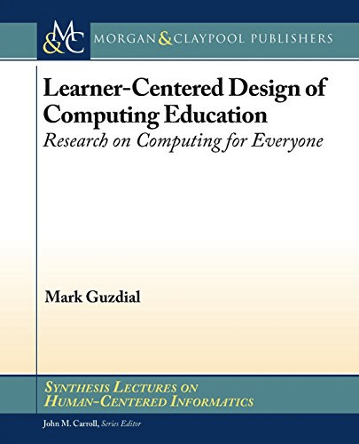

A New Book from Mark Guzdial
Regular readers will know that I am a huge fan of Mark Guzdial, a professor at Georgia Tech whose group does world-class work on computing education, and who blogs about it regularly and incisively. Mark has just released a new book; you can preview the contents if you want, or just head straight to Amazon and order a copy.
In it, Mark asks what it means to talk about teaching everyone to program, and whether we should we have the same goals for a mass audience as we do for professional software developers. If not (and he makes the “not” case pretty convincingly), then how do we design computing education that works for graphic designers, high school teachers, and everyone else? His answers are based on both his own experience and his comprehensive knowledge of CS Ed research, and is a solid, readable, and purposeful introduction to the latter. It’s definitely going to be on the reading list for future instructor training classes…
